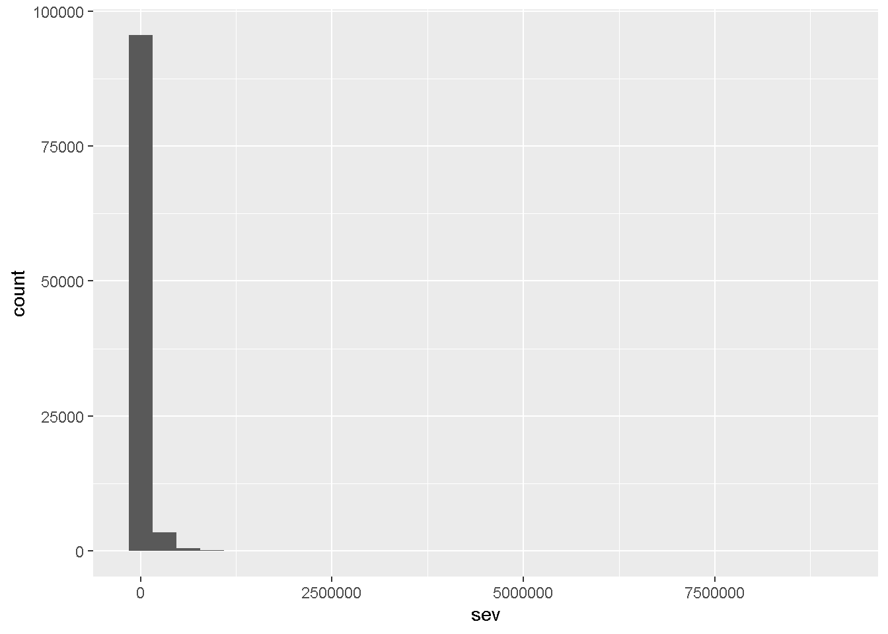

R is very good tool for simulation. In this small blog post , i will show a basic code on how we can perform simulation of insurance claims.
Before we execute any R code, we need to make assumption of the problem. Lets discuss it step by step.
lets consider that we are writing 1000 identical insurance policies next year
We want to measure the losses we expect to pay on claims resulting from these policies. Lets assume that there is 10% chance that a single policy having claim.
we will use discrete probability distribution (Poisson distribution ) to simulate the frequency
then we will need to simulate loss amount for each claim. For this we will use log normal distribution with a log mean of 9 and a log standard deviation of 1.75.
In real world probability of single policy having claim and distribution to be used is determined by actuary .
for reproducing same simulation lets set the seed
set.seed(101)now lets generate a single frequency from the poisson distribution.
lamda<- 1000*0.1
freq<- rpois(n=1,lambda = lamda)
freq## [1] 96Now lets generate a seventies. Each severity represent the ultimate value of 1 claim.
s<- rlnorm(n=freq,meanlog = 9,sdlog = 1.75)
s## [1] 16494.6915 3237.5594 3815.6687 9911.7453 21004.3671
## [6] 109549.4234 12084.0678 2149.2501 367.8502 162989.7116
## [11] 16762.2283 34415.1330 4956.6722 16626.1394 3591.5584
## [16] 1454.4070 87935.6729 38720.8479 100384.6441 6278.6905
## [21] 3806.3890 2266.3558 87842.8922 925.6193 6055.1188
## [26] 24235.4854 32010.6728 8796.2037 11973.4288 37669.5896
## [31] 620317.0156 21953.5924 3320.1737 125594.7571 117348.3768
## [36] 47121.6039 2921.5986 2159.5977 169773.5367 30536.1506
## [41] 328289.5969 150739.0909 5898.5053 209.1928 89175.4712
## [46] 1665.1902 45023.6992 2257.0307 550.7948 249.2587
## [51] 53498.3274 3925.6968 357.2674 742464.0186 377.3390
## [56] 68413.3651 314826.2083 8481.4221 13413.8053 1222.8395
## [61] 10106.0228 37544.7524 7244.7752 793.8730 4501.6649
## [66] 3213.9754 7433.8037 115506.3500 18208.7656 2831.7991
## [71] 3458.5469 1497.9626 16072.3840 6097.3427 6764.3159
## [76] 161313.5916 2194.7301 29700.6294 63916.2753 19345.3911
## [81] 10566.6111 2151609.9032 78964.6884 12540.0525 331630.7098
## [86] 25367.5486 430014.6202 40352.4935 17636.3585 28253.0039
## [91] 2491.8780 125.2502 914.2403 1912.7917 194.1251
## [96] 2766.7660In the above example our frequency was 96 and by summing the severities of these 96 claims we arrive at the observation total of 7493485
Above we learned how to run a single observations. by inspecting the results of many observations we can determine the confidence level of experiencing different loss amount.
lets assume the number of observation this time be 1000.
n<-1000Generating frequncy
freq<-rpois(n=n,lambda = lamda)Generating Seventies
obs<-purrr::map(freq,function(freq)rlnorm(n=freq,meanlog = 9,sdlog = 1.75))Presenting in table
library(dplyr)
i<-0
obs<- purrr::map(obs,function(sev){
i=i+1
data.frame(
ob=i,
sev=sev
)
})
obs<- dplyr::bind_rows(obs)
kableExtra::kbl(head(obs,5))| ob | sev |
|---|---|
| 1 | 4587.363 |
| 1 | 1906.677 |
| 1 | 55341.219 |
| 1 | 174495.517 |
| 1 | 4590.121 |
library(ggplot2)
obs %>%
ggplot()+
aes(sev)+
geom_histogram()
summary(obs$sev)## Min. 1st Qu. Median Mean 3rd Qu. Max.
## 4 2496 8148 36556 26483 9012232Simulations allow you to answer highly complicated questions that would be impossible to solve directly from math equations and probability density function.